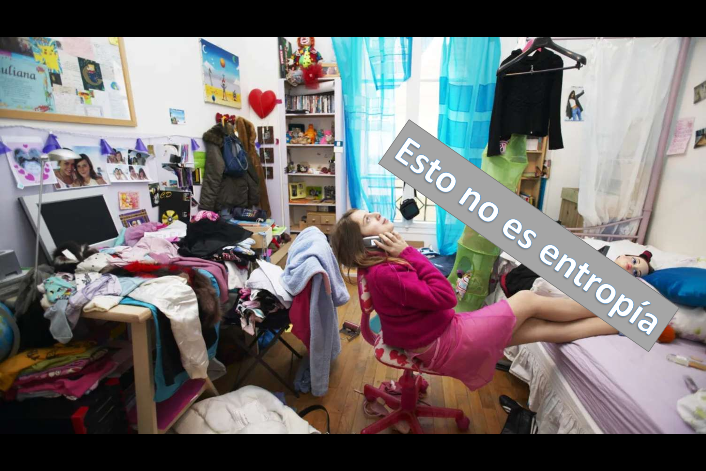

Pero...¿qué es entropía?

Gas ideal en un recipiente aislado, que se expande contra vacío

¿Cambia la entropía del gas o permanece igual?
El proceso es irreversible, y es un sistema aislado, entonces su entropía debe aumentar.